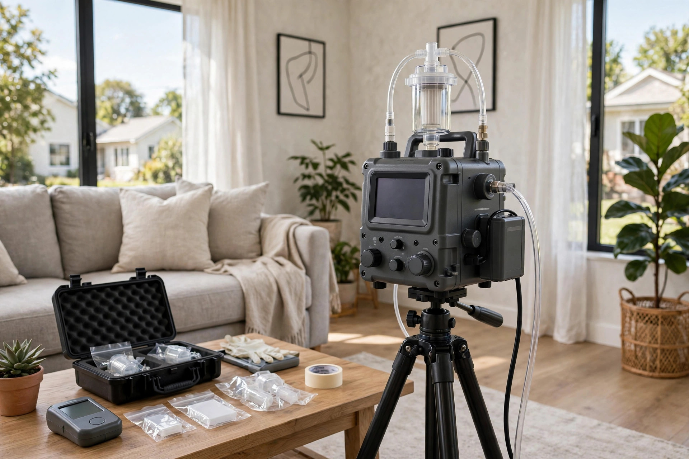

Is it mold, and how bad is it? Testing gives you the numbers.
A musty smell or a dark patch tells you something is wrong. It does not tell you what species is growing, how concentrated it is, or whether the air in the next room is affected. Professional mold testing in Meridian measures all three, so any cleanup that follows targets the real problem instead of guessing.

A Paramount laundry room that smelled damp every August
The homeowners noticed a sour odor near the washer each late summer but saw nothing. Moisture readings found the wall shared with the garage running damp; air sampling showed indoor counts triple the outdoor control for two water-indicator genera. The culprit was a slow supply-line seep inside the wall that only showed during heavy irrigation months. Testing turned a vague worry into a located repair.
Mold test questions, answered directly
How long until I get lab results?
Most labs report within two to three business days of receiving the samples. We send the full written report the same day results arrive, with our read on what the numbers mean for your home.
Do I need testing before cleanup?
Not always. If mold is plainly visible across a wide area, cleanup can start from the visual evidence. Testing earns its value when growth is hidden, when a transaction needs documentation, or when symptoms lack an obvious source.
Will testing damage my walls?
No. Air cassettes, swabs, and tape lifts are non-invasive. Moisture meters read through paint and drywall without holes. If we recommend opening a wall, that is a separate decision you approve first.
Can a home test kit do the same thing?
Settle-plate kits catch whatever drifts onto them with no volume measurement and no outdoor control, so the results cannot be interpreted reliably. Professional sampling measures a known air volume against same-day outdoor air — that comparison is the whole point.
What does testing cost in Meridian?
It depends on how many samples the situation needs — typically a walkthrough plus two to five samples. Call (321) 985-3339 and describe what you're seeing; we'll quote the visit before anyone drives out.
Sources: EPA — Mold, Moisture & Your Home CDC — Mold and Health
When testing earns its keep in Meridian
Not every dark spot needs a lab. These are the situations where measured data changes the decision.
A smell with no visible source
Meridian's newer subdivisions like Paramount seal homes tightly for energy efficiency. When a musty odor drifts from a bathroom or laundry wall but nothing shows on the surface, air sampling can reveal elevated spore counts that point to hidden growth inside the cavity.
Buying or selling a home
A transaction in Bridgetower or Tuscany moves fast. Buyers want documentation, not opinions. A written lab report with sample locations and results gives both sides something concrete to negotiate around.
After a leak has been fixed
The Settlers Canal lateral runs near plenty of Meridian backyards, and irrigation season keeps soil moisture high. Once plumbing or roof leaks are repaired, testing confirms whether the drying worked or mold kept growing behind the wall.
Health symptoms without a clear cause
The CDC notes that mold exposure can irritate eyes, skin, nose, throat and lungs (CDC — Mold and Health). When symptoms flare at home and ease elsewhere, indoor air data helps your doctor and your contractor work from the same facts.
How a testing visit runs
Straightforward, no drama. Most appointments take under two hours.
Walkthrough and history
We start with your story: when the smell or stain appeared, any leaks, how the HVAC runs. In Meridian's 2000s-built homes, we also check how the house breathes — bath fans, range hoods, and attic ventilation all shape where moisture settles.
Moisture mapping
A meter reads moisture inside walls, baseboards, and window frames without opening anything. Wet readings decide exactly where samples get taken, so you pay for data that matters.
Air and surface samples
A calibrated pump draws room air through a cassette; swabs or tape lifts capture visible growth. An outdoor control sample is taken the same day, because interpreting indoor numbers requires knowing what the Treasure Valley air already carries.
Accredited lab analysis
Samples go to an independent lab. You receive genus-level identification and spore counts per cubic meter — not a pass/fail sticker, but actual numbers with context.
Plain-language report
The report maps each result to its sample location and explains what it means in everyday terms, plus what step makes sense next: monitoring, targeted cleanup, or nothing at all.
What testing can and cannot tell you
Honest limits matter as much as capabilities.
It can confirm hidden growth
Elevated indoor counts of water-indicator molds, compared against your outdoor control, strongly suggest active growth somewhere in the building envelope — even when walls look clean.
It can scope a cleanup
Results show which rooms are affected and which are clear. That keeps remediation contained to the real area instead of tearing open half the house on suspicion.
It cannot name a health outcome
No test predicts who will react or how strongly. The EPA advises fixing moisture and cleaning mold regardless of type (EPA — Mold, Moisture & Your Home).
It cannot replace a visual inspection
Sampling complements eyes and meters; it never replaces them. A thorough visit always includes looking in the attic, crawlspace, and behind appliances.
Get numbers before you guess
One visit, real lab data, and a straight explanation of what it means for your Meridian home.